土木建築部門の最大の使命は、将来にわたって電力を安定的に供給するための施設を造り、その維持管理を確実に実施していくことです。そのため土木建築部門は、良質で安価な電力を安定して供給するために必要な発電所をはじめ、さまざまな重要施設の調査、計画、設計、建設、点検、保守の業務を担っています。
発電所の建設にあたっては、地形・地質などの調査を実施し、安全性、経済性および環境保全等に配慮した設計、工事監理を行います。既存の土木・建築設備の健全性を維持することも重要な業務であり、巡視・点検のスマート化、高度化を進めるとともに、適切な修繕・改良を行うことにより、安全性の確保や設備の延命化を図り、設備のライフサイクルコストの低減に努めています。特に、志賀原子力発電所においては、安全性をより一層高めるため、原子力発電所における新規制基準に適合するよう安全性向上施策を実施しています。
また、SDGs達成やカーボンニュートラル実現に向け、水力発電、風力発電などの再生可能エネルギー開発、石炭灰などの廃棄物有効利用促進および太陽光パネル廃棄ガラスの利用技術開発や二酸化炭素のセメント固化体への吸着技術開発などの一翼も担っています。
このように土木建築部門には、発電所建設などスケールの大きな仕事にチャレンジできる環境に加え、新しい感性や高度な技術を必要とするやりがいのあるプロジェクトが無限にあります。
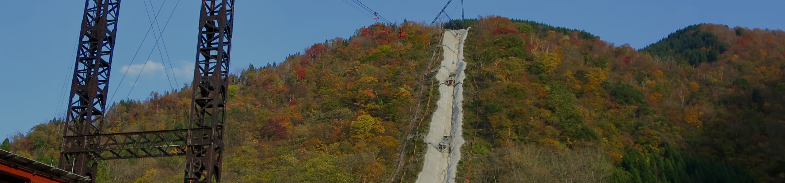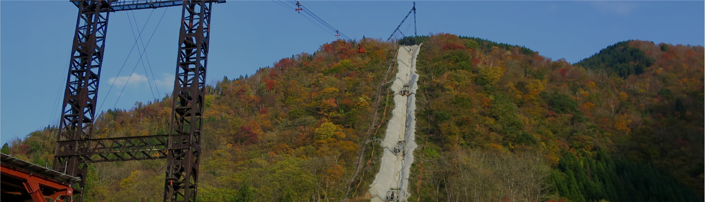
土木建築部 建築チーム北口 将広
入社 / 2013年
工学部 環境土木・建築学科 建築学コース卒業
2020年4月 土木建築部 建築チーム
経歴は取材時点のものです
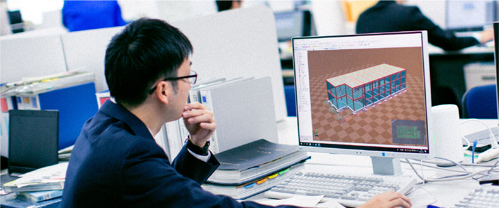
 歩んできたキャリアは？
歩んできたキャリアは？
特定の分野にとどまらず、幅広い観点、俯瞰した視野から建物を考えられるプロになりたい、そう考えていた私は、計画、構造、環境、現場監理など360°の分野を経験できる電力業界の建築部門に惹かれ入社。志賀原子力発電所の建物保全や安全性向上工事の現場監理を担った後、水力・火力発電所設備の新築・改修工事における基本計画策定から工事まで一連の取り組みも。さらに、当社保有建物の耐震性・構造評価や新規建設プロジェクトの技術的支援など、入社8年目にも関わらず多種多様な建設工事に関わり、技術を磨いてきました。
 現在の仕事、
現在の仕事、
プロとして意識していることは？
SDGsへの注力が企業価値を左右する時代、クリーンエネルギーと言えば北陸電力とのイメージに安住することなく、さらなる進化を生み出し、リードしていくことが私たちの意志です。私はCO2削減に向けた取組みの一つである石炭火力へのバイオマス燃料混焼プロジェクトにおいて、燃料貯蔵用サイロなど大型設備基礎設計、設備改造に取り組んでいます。未来に向けた北陸電力の代表挑戦事例とも言える当プロジェクトに構想段階から関わり、事業成立性の検討も行いながら、運転開始へ向けた歩みを進めています。私が強く意識しているのが、スケジュール管理やコスト削減はもちろん、北陸電力の中核設備として何十年と稼働し続けていくものとして建築物・発電設備のあり方を今一度問い直し、環境配慮や発電所機能向上、採算とのバランスを保ちながら工事を進行していくこと。決して簡単なことではありませんが、関係各所を巻き込み、いくつもの課題を解決しながら、人々の未来に貢献するクリーンエネルギーづくりに自ら挑んでいくことに大きなやりがいを感じています。

 これから挑みたいことは？
これから挑みたいことは？
北陸電力の事務所に魅力ある木造建築を導入したいと考えています。これまで企業の事務所として活用する中大規模の建築において木造建築適用は経済性や法令上の観点から非常に難易度の高いことでした。しかし、近年では新たな工法開発や法改正が進んだことでそれらの諸問題も解決され、また、サステナビリティの観点から木材利用が推進されるなど、実現の機運が高まっています。人々が過ごし、業務を行う心地よい空間として、また地域に溶け込む建造物として、魅力ある木造建築物を実現できるよう提案していきたいと考えています。
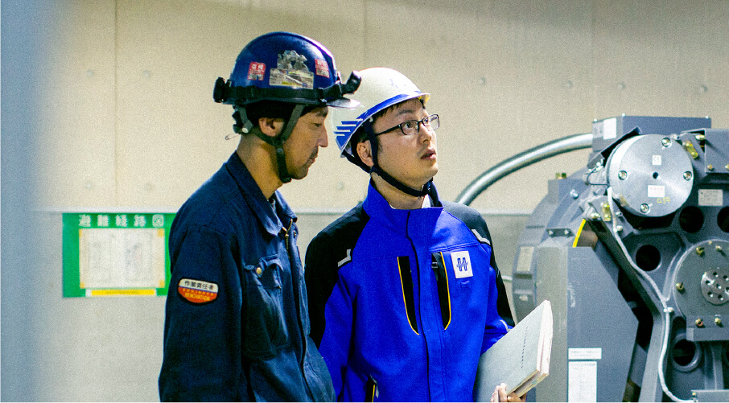
 学生へメッセージを
学生へメッセージを
分野を超えて、領域を超えて、横断的に一連の業務に携われるのが電力会社における建築分野の面白さです。これから何十年と使われ続けていく建物をつくり、この地に暮らし、生きていく人々の活動を支えていく。クリーンエネルギーを進化させ、環境に貢献していく。そんな挑戦をともにしていける仲間を心からお待ちしています。

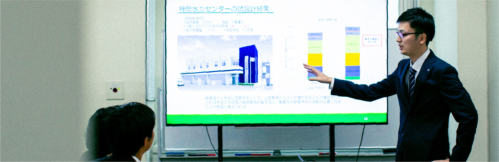
上司への決裁説明
基本計画を手掛けている建物・工作物について委託仕様書や決裁書など資料を準備し、部内に提案。無事承認を受けた後は工事実施へ詳細を検討していきます。
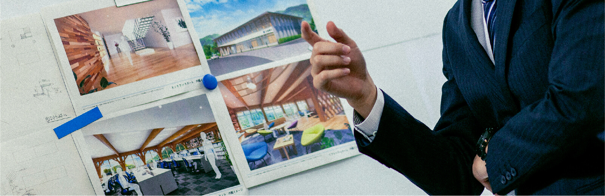
設計打ち合わせ
設計に関して業務委託している設計事務所と打ち合わせ。計画をもとに、設計方針や各工程のスケジューリングを協議していきます。現在はオンラインで実施することも多くなっています。
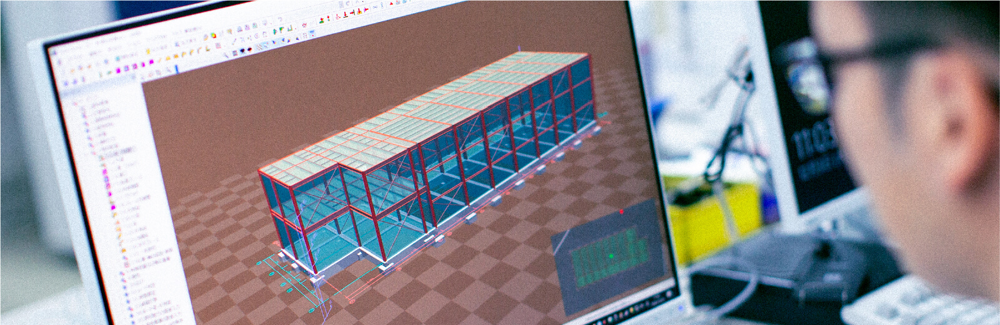
構造評価報告書作成
発電所のようなプラント建築の分野では、内部設備の改造等に伴い、建物構造の再評価を実施することが多々あります。解析ソフト活用のもと建物の構造健全性を評価することで法令や規定に沿っているか確認を行い、報告をまとめます。
積算資料作成について後輩へ指導
設計図に基づき、施工方法を考慮したうえで材料数量等を算出し、全体の工事費用を明らかにするのが積算業務です。後輩が作成した積算資料について、根拠等を確認し、具体的な工事のイメージを伝えながら、見落としがちな積算項目や記載方法などをアドバイスします。
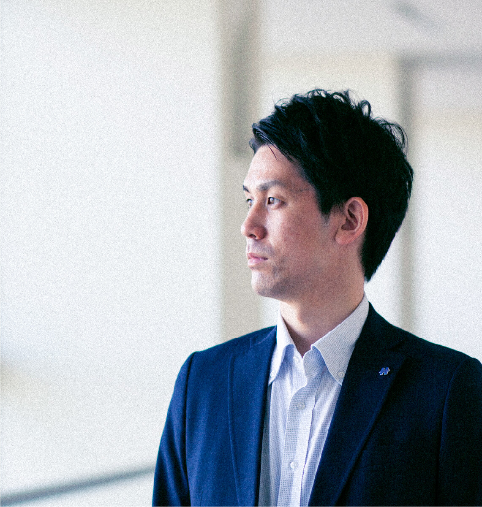

土木建築部 調査技術チーム巢守 亮平
入社 / 2014年
社会工学専攻卒業
現在に至るまでの経歴
2014年5月 富山支店 常願寺電力部 土木課
2017年7月 土木部 調査技術チーム
2020年4月 土木建築部 調査技術チーム
経歴は取材時点のものです
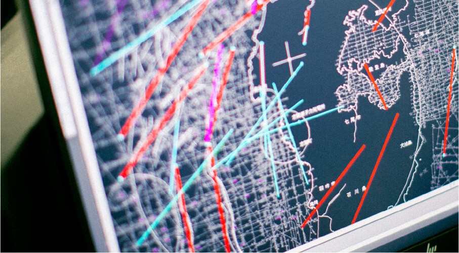
 入社動機は？
入社動機は？
大学時代に学んでいた工学を仕事でも活用し、多様な建設に携わることで技術を身につけていけると考え、選んだのが電力のフィールド。小さい頃から暮らしている地域に事業所があり、北陸電力は身近な存在だったことも決め手の一つです。人々が暮らし、経済活動を行っていくのに必要不可欠なインフラを担うことで北陸地域を支えていきたいと思い、入社を決断しました。
 現在の仕事、その魅力は？
現在の仕事、その魅力は？
土木はダムや発電設備などの建設から保守まで幅広い仕事がある中、私が担うのは「鉱物脈法」と呼ばれる専門手法を活用した地質の調査です。現在停止している志賀原子力発電所、その再稼働へ安全性を保証するのが私の役割。発電所地下に存在し、地震を引き起こす可能性のある断層を調査し、約12〜13万年前以降に非活動を示すデータから活断層ではないことを証明。安全性を評価し、原子力の安全規制を統括する原子力規制委員会に対して説明しています。私の調査、そして説明内容によって原子力発電所再稼働の可否が決まるため、大きな責任が伴っています。以前参加した審査会合では動画配信の一般公開があるなど、私たちが担う仕事の意義、そして責任を改めて実感しました。北陸電力を代表して臨む、そのような使命感のある仕事に若手ながらにして携わっていけるのは当社ならではだと思います。
 これからの目標は？
これからの目標は？
電力自由化の中、北陸電力はより選ばれる会社になっていかなくてはいけません。そのためには既存設備の運用見直しなど各発電所の発電量を増やすのにとどまらず、新規地点開発・再生エネルギー拡大などを積極的に実践していく必要があると考えています。北陸電力には組織に新たな風を吹き込んでいく取り組みを歓迎する文化風土があります。そのような環境のもと機会があれば自ら手を挙げ、この領域に挑戦していきたいと考えています。そして、土木技術を活かして水力、火力、原子力、風力、太陽光など多様なプロジェクトに携わる経験を積むことで自らの技術と知見を深め、どんな場所でも力を発揮し、新たな取り組みを実践、主導していける技術者を目指していきたいです。
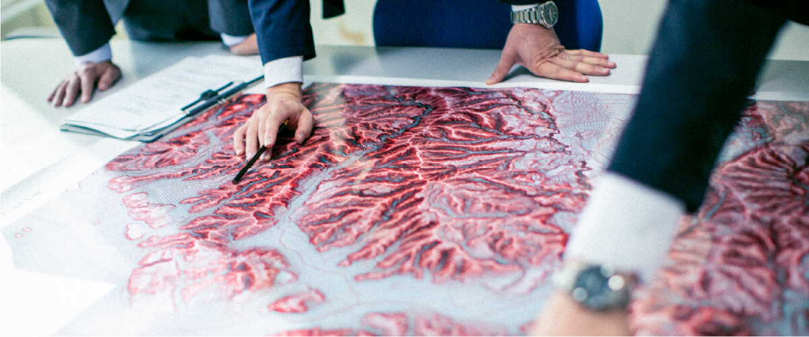
 学生へメッセージを
学生へメッセージを
土木技術を磨いていくのはもちろん、さまざまな分野を横断し、知識を磨きたい、スキルを獲得していきたいと考える方、若いうちから活躍したいと思う方にとって、北陸電力の土木分野はぴったりの場所だと思います。ともに働き、大きなミッションに挑んでいける日を楽しみにしています。

- 8:30
-
出社、チームミーティング
徒歩で社宅から本社へ出勤。歩くことで頭の中をフレッシュにして1日の業務に取り掛かります。チーム内でミーティングし、審査資料の作成工程や審査計画等を共有します。
- 10:00
-
審査会合出席
原子力規制委員会との審査会合に参加。審査資料をもとに議論を行い、志賀原子力発電所の安全性について審査を受けます。
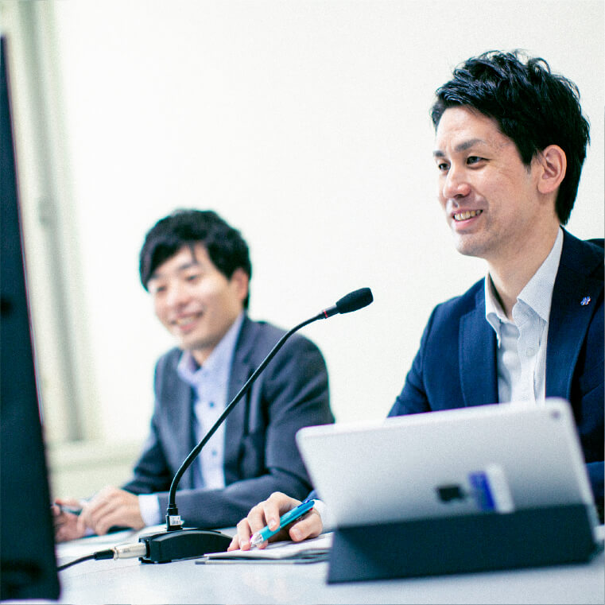 - 13:00
-
上司との打ち合わせ
午前中に行った審査会合の内容について上司との打ち合わせを実施します。指摘を整理し、次回の審査会合に向けた資料修正方針を固めていきます。
- 15:00
-
審査資料作成
担当領域である活断層調査の内容をもとに審査資料を作成。データの解釈に矛盾がないことはもちろん、規制委員会の指摘や質疑を想定し、説明性を高めていきます。
- 17:30
-
退社し、子どもとの時間
資料作成を切り上げ、なるべく早めに帰宅。子どもとの時間を過ごします。一緒にお風呂に入って楽しい時間を過ごせば1日の疲れも吹き飛びます。